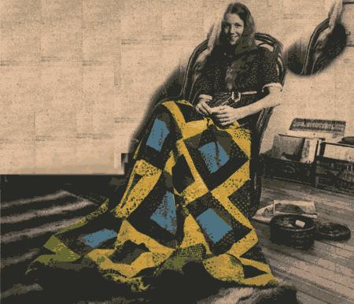
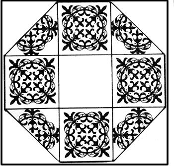
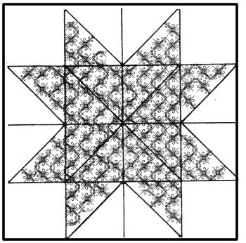
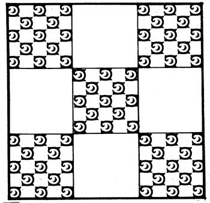

My romance with quilts began when I was given a piece of an old "crazy quilt" several years ago. Crazy quilts are made from odd-shaped pieces of fabric haphazardly joined together with fine embroidery.
Inspired by my gift, I began to make pillow covers that looked like the section of coverlet I had received. Then, as my interest grew, I learned about and began to appreciate and collect many types and patterns of quilts.
The top of a patchwork quilt is easy to design and make. Just pick a pattern, trace the shape onto scraps of material (if you don't have any scraps of your own, ask and folks will gladly give you theirs), cut out the pieces, and sew them together whenever and wherever you can. "Piecing", as this part of the job is called, is an especially fine pastime as the miles roll by on a long journey.
One excellent large paperback book, 101 Patchwork Patterns, is all you need to get you started in quilt design. The guide is by Ruby McKim and it does, indeed, contain 101 different designs with templates to trace and lots of fun stories about how patterns like "Crazy Anne" or "Road to California" got their names.
Of course, you really don't even need that book. You can do as I did for my first quilt and just invent your own design! I simply cut out a lot of triangles all the same size and began sewing them together and arranging them as I went along into a pattern of light and dark concentric squares. (Many of the rare and artistic quilts that museums collect today were made in just this way.)
Once your top is all pieced together, you must join it to a lining (cotton is best) and a backing which can be anything from an old sheet to nice new calico sewn to the right size. This joining can be done by either the relatively easy process of "tying" or with fine stitches. The stitches take longer, of course, especially when done by hand but that's the method I prefer to use.
People ask me why I use such a laborious process on my coverlets. They say, "You could have done it in one-fourth the time if you'd used a machine."
Well, they don't understand. I really believe in the integrity of handmade goods and, as I personally watch my squares grow into a large and beautiful whole, I know each piece and love it and feel a part of it. This just isn't possible when a machine does all the work.
So make yourself a quilt. Make a friend a quilt. But give yourself a lot of time for this homecraft. It really is worth it.
|
 |
 |
 |
|
 |
|
|